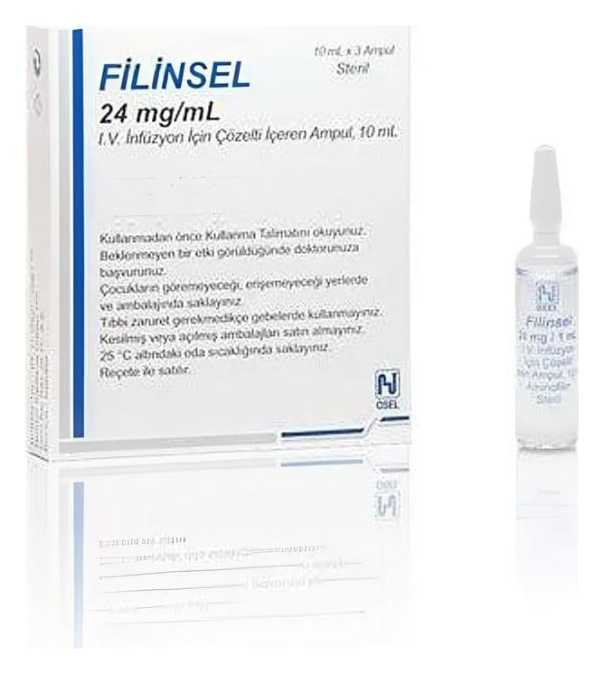

Filinsel 24 mg/ml IV İnfüzyon İçin Çözelti İçeren Ampul, 10 ml X 3 Ampul

Ne için kullanılır
KT · Bölüm 1• FİLİNSEL etkin madde olarak her bir ampulde 240 mg teofilin etilendiamin ( Aminofilin) içerir. • FİLİNSEL, ksantinler olarak adlandırılan ve solunum yolu ile ilgili hastalıkların tedavisinde kullanılan bir ilaç grubuna dahildir. • FİLİNSEL, 3 adet 10 mL’lik ampul içeren kutular ile kullanıma sunulmaktadır. Bununla beraber 100 adet 10 mL’lik ampul içeren hastane ambalajında bulunmaktadır. • FİLİNSEL, astım, kronik bronşit (akciğere giden hava yollarının müzmin iltihabı) ve amfizeme (akciğerlerdeki hava keseciklerinin aşırı genişlemesi) bağlı bronş darlıklarının tedavisinde kullanılır. Ayrıca sol kalp yetmezliğine bağlı akut akciğer ödemi ve gece ortaya çıkan nefes darlığında kullanılır.